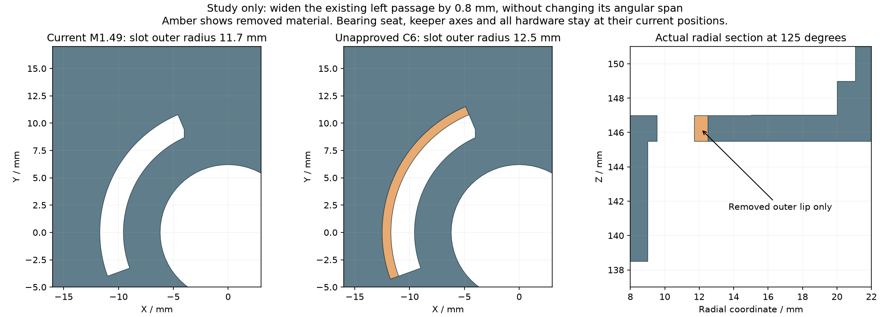
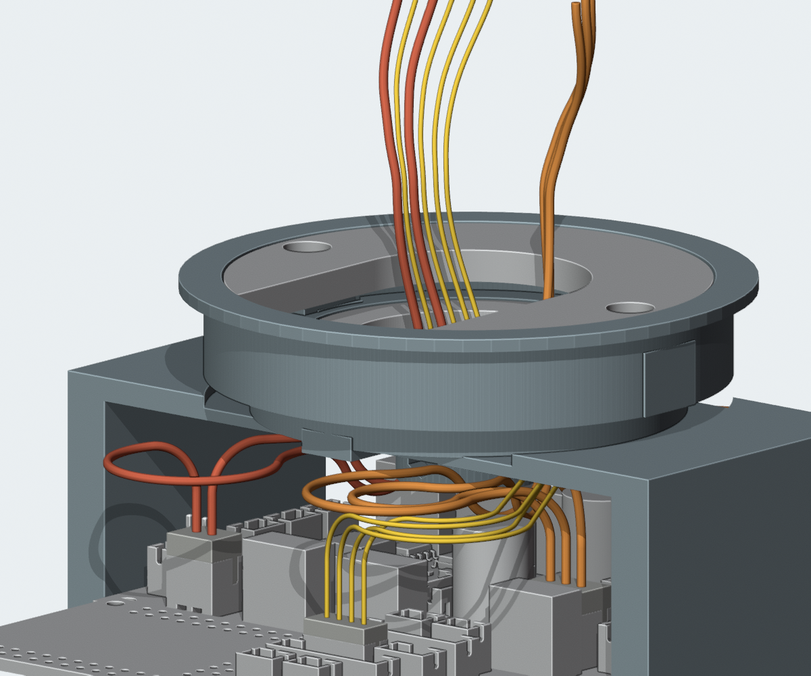
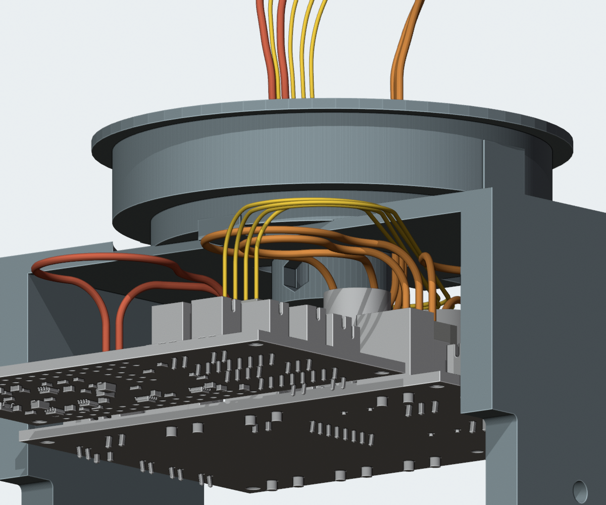

← 线束检查总览C6：现有左侧穿线口加宽 0.8 mm
待用户确认，尚未应用。主模型、STL和 M1.49-A1 视频仍是已确认的 C5＋K1。下部线束的名义几何检查通过，完整线束仍为 BLOCKED。
把 Yaw_Base 现有左侧弧形开口的外缘半径从 11.7 增至 12.5 mm，开口宽度由 2.15 增至 2.95 mm。实际只削去下方承台内缘约 22.05 mm³ 材料；不增加零件、螺钉或外部凸台。开口角度、轴承座接触面、头部位置和 K1 压板固定孔保持。

实际实体剖面对比。橙色为删去的窄边；仅扩大已有开口。修改只落在 R11.7～12.5、Z145.5～147 mm 的局部范围。

九根身体到颈部导线的共同候选：3 根舵机总线、2 根 CAM 供电、4 根 CAM 信号。线径为未选定的资料参考；上端开放。两根喇叭局部预留线未在此图显示。

下方视角。外壳等遮挡物在图中隐藏；碰撞检查仍包含完整实体和接插件预留。| 检查范围 | 结果及界限 |
|---|
| 零件修改 | 仅 Yaw_Base 删减材料，仍为一个连续实体；R11.69以内和R12.51以外的材料未改变。轴承与紧固件未移动。 |
| 九根下部导线共同存在 | PASS。选中的9条连续路线经过当前候选实体、13个偏航／10个俯仰离散姿态和自身回绕检查。失败的其他候选保留在原记录中。 |
| 线间与连接 | PASS。含2根喇叭局部预留，共715组完整线间检查，最小保守间隙下界 0.308 mm，要求0.3 mm；117处连接坐标吻合。 |
| 未完成 | CAM上段汇合、其余端部、固定与应力释放、FFC/FPC及带线装配。C6通过的是下部路线，不能与未通过的上段拼成完整线束。 |
| 实物验证 | PA12强度、实际线束成形／回弹、动态疲劳、端子与安装公差仍为 NOT_TESTED；曲线长度不是供应商下料尺寸。 |
可编辑 Blender 候选 · 九线完整下部检查 · 材料变化与连通性 · 原结构入口剖面 · 原回弯交叉位置
确认范围仅为上述0.8 mm开口变化。其余打印件、承力连接、孔位、硬件及运动范围不在本候选的改动范围内。